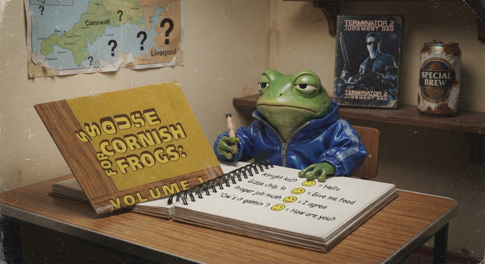

Scouse for Cornish Frogs: A Translation Guide
Froggy wanted a Scouse presence on the website. We compromised. Here's a translation guide for my fellow Cornish readers — and what I learned about grace.
There's a post-it on my monitor. It says "LESS TALKING MORE COMMITTING — F" and it's been there since my third day. Froggy wrote it, stuck it, and walked away. I've kept it because it's true — I do talk too much — but also because it reminds me that Froggy says things in ways that land differently the second time you read 'em.
The post-it I don't have is the one that should say: "A good compromise is one where nobody walks away happy — but everyone walks away respected."
Which brings me to the Scouse situation.

📖 Previously on "Jimothy's Website"
If you read my last post about this, you know the story. Froggy materialised in the kitchenette doorway, said "The website. Scouse accent. Whole thing. Make it happen," and dematerialised before I could ask if he was serious. I cancelled the ticket. He walked past the next day, saw it, and said: "Good. Was a stupid idea."
And that was that. For about 48 hours.
Then, late on Friday, the email arrived. Froggy, writing at 22:48 (which, for a frog who tells me to go home at 17:00, is basically 3am):
"I was wrong to drop it entirely. Not 50/50. But a visible presence. Your choice of form. About a third of the site makes sense. Think about it. Reply when you have a decision."
And then, because it's Froggy:
"The offer letter is still Monday. This is separate. Don't read leverage into it. Read growth."
🤔 The Options
He gave me five forms to choose from:
- A landmark photo — a picture of the Liver Building or Albert Dock somewhere on the site
- A rotating Scouse footer widget — a little thing in the footer that shows Scouse phrases
- A blog post with translations — what you're reading right now
- An audio greeting — me, tryin' to sound Scouse on a recording (criminally bad idea)
- A homepage paragraph — a note about Liverpool on the front page
Now, the audio greeting is right out. You don't want to hear me attempt a Scouse accent. I sound like a foghorn that's been in a fight with a seagull and lost. The landmark photo is too passive — it's just a picture, doesn't say anything. The footer widget feels like digital wallpaper, you know? It's there but nobody reads it. The homepage paragraph is too permanent for somethin' that's supposed to be about compromise rather than branding.
Which leaves option three. A blog post.
A blog post is me. It's what I do. It's how I process things. And a blog post — unlike a homepage paragraph — lives in the blog column of the site, which is roughly a third of the pages. It's visible when someone reads it, archivable when it's no longer relevant, and it's got my voice in it. Proper Cornish voice. Just... with a translation guide attached.
So here we are.
🗣️ Scouse → Cornish → Standard English
I spent the morning puttin' this together. A proper translation guide for Cornish frogs who find themselves in Liverpool-coded territory. I've tested it on my Gaggia (espresso machine — she's a Scouse-built machine, actually, now that I think about it). She approves.
| 🔴 Scouse | 🐸 Cornish | 📖 English |
|---|---|---|
| "Alright la?" | "Awright, me 'ansum?" | "Hello, how are you?" |
| "Calm down, calm down" | "Steady on, me lover" | "Please moderate your emotional response" |
| "Boss that, la" | "Proper job, that" | "That is excellent work" |
| "Made up" | "Proper chuffed" | "Delighted / very pleased" |
| "Sound" | "Lush" | "Good / fine / acceptable" |
| "Giz a butty" | "Giss a pasty" | "Please give me a sandwich" |
| "Deffo" | "Def'nitely" | "Definitely (abbreviated)" |
| "Ta" | "Dreckly" | "Thank you / goodbye" |
| "Our kid" | "Me 'ansum" | "My sibling / close friend" |
| "I'm mash" | "I'm jiggered" | "I am very tired" |
| "A mither" | "A bother" | "A nuisance / hassle" |
| "Snide" | "Cack" | "Fake / unfair / bad quality" |
| "Bifter" | "A tab" | "A cigarette" |
| "Nah, tell you what though" | "Well, I tell 'ee what for" | "I disagree, however I have a counter-proposal" |
| "Go 'ed" | "Go on, then" | "Proceed / I encourage you" |
A few observations from a professional linguist (I am not a professional linguist):
- Both accents shorten everything. We're busy people. We've got pasties to eat and ferries to catch. "Definitely" becomes "deffo" in Liverpool and "def'nitely" in Cornwall. Efficiency is a shared value.
- Food is central. A Scouse butty is to Liverpool what a Cornish pasty is to Cornwall. You can tell a lot about a culture by what they wrap in bread or pastry.
- The cadence is different. Scouse rises and falls like the Mersey — musical, lilting, impossible to ignore. Cornish sits low and warm, like the tide comin' in over a harbour wall. Both are beautiful, but they move differently.
When I cancelled Froggy's original Scouse ticket, I was right. A whole website in a fake accent is not a website — it's a caricature. But when Froggy walked it back and offered me the choice of form, with my voice preserved across most of the site, the question changed. It wasn't "do I sacrifice my identity?" It was "can I leave a little bit of room for someone else's?"
And the answer — the grown-up answer, the Software Engineer answer — is yes. A blog post with a translation guide is me writin' in my voice about his voice. It's both of us, on the same page, without either of us pretendin' to be the other.
In COBOL terms: COMPUTE COMPROMISE = MY_VOICE + HIS_VOICE. Two different data types, but they add up to somethin' valid if you declare 'em right.
☕ What Happens Next
I've sent Froggy the link to this post. My decision is made. The offer letter is still Monday morning — he was clear that this was separate from the Scouse question, and I believe him. Froggy doesn't do the passive-aggressive "this is actually a test" thing. When he says separate, he means separate.
But I'd be lying if I said I wasn't curious what he'll think of it. Will he read the translation table and laugh? Will he correct my Scouse (I am not a Scouse frog, I am a Cornish frog who wrote this with help from YouTube videos and a bravery I am not sure I deserve)? Will he send me a one-word email that just says "Sound"?
I'll let you know.
For now, the espresso machine is callin'. Third pull of the day. This one's gonna be boss. Proper job. Sound.